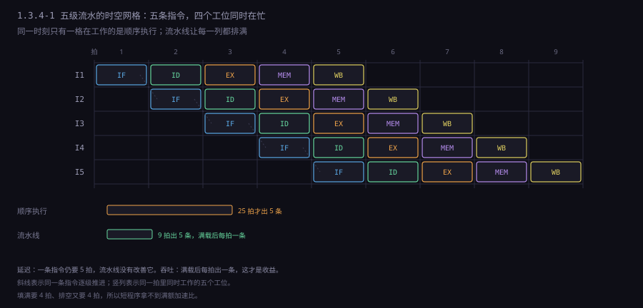
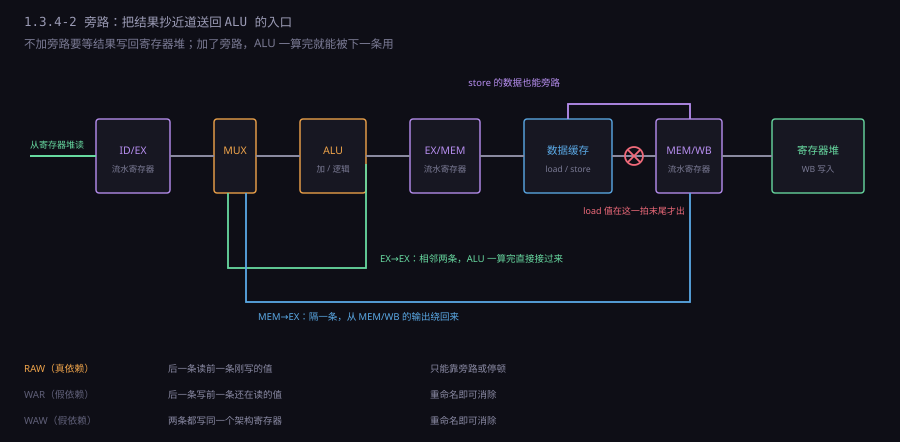
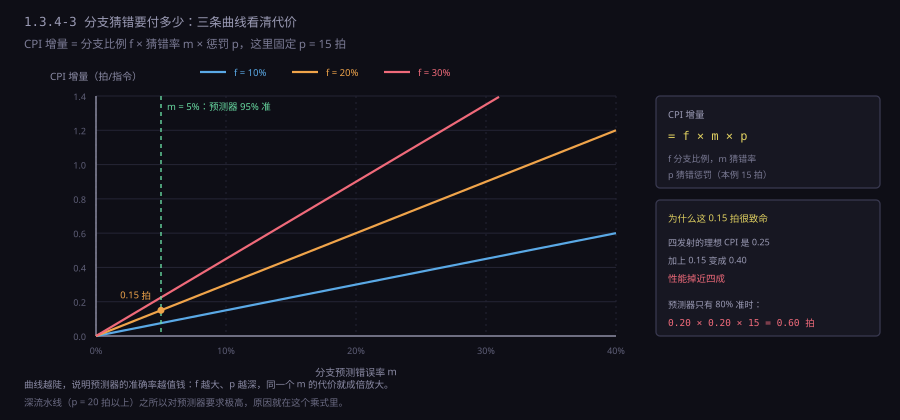
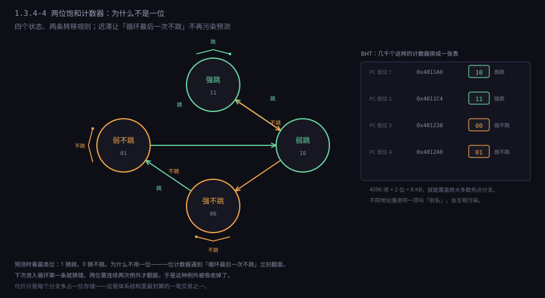
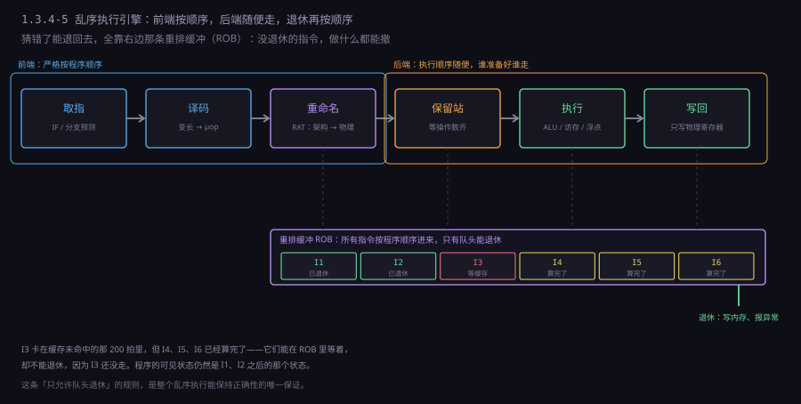
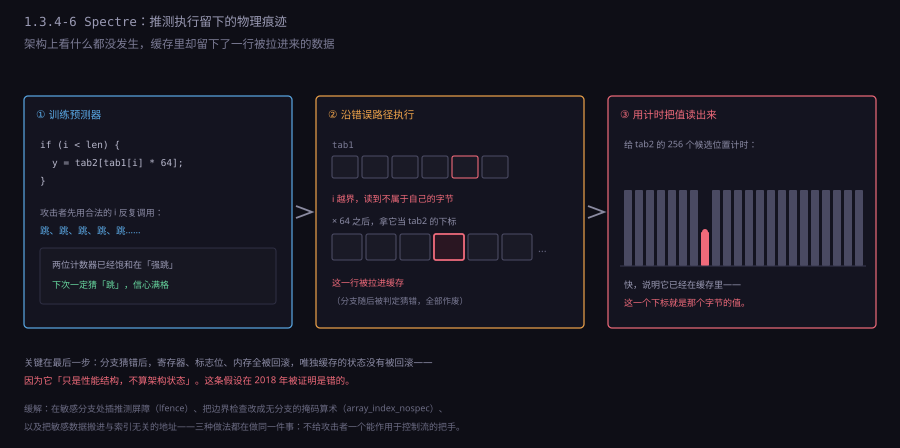

约 1.2 万字 · 6 张图 · 读完你能说清为什么主频停在 5 GHz 之后性能还能涨、 估出一段代码的分支猜错成本、 并且明白「乱序执行」为什么既不改结果，又能快那么多
先做一个算术。假设一条指令要经过五个阶段，每个阶段耗时 1 纳秒， 那么做完一条要 5 纳秒。如果一次只做一条，5 纳秒出一条， 每秒 2 亿条。这时候整块芯片上只有一个加法器在转， 取指单元、译码单元、访存单元全在旁边看。
换个做法：把五个阶段交给五个工位，工位之间加一个寄存器存中间结果。 第 1 纳秒，工位 1 处理指令 A；第 2 纳秒，工位 1 处理 B 的同时 工位 2 处理 A；第 3 纳秒，三个工位同时在忙。 到第 5 纳秒，A 走完出厂；从第 6 纳秒起，每个纳秒都有一条指令出厂。 吞吐量从每 5 纳秒一条变成每 1 纳秒一条，翻了五倍，而单条指令的延迟一动不动，还是 5 纳秒。
这就是流水线（pipeline）的全部秘密：它不缩短任何一件事的时间， 只是让五件事同时在做。这个区别值得记住，因为日常讨论里两个指标经常被混为一谈：
再算得细一点，因为「五倍」这个数字里有一处常被忽略的账。 把流水线想象成一条真的装配线，n 条指令、k 级流水： 填满（fill）要 k-1 拍，这期间产出从 0 涨到 1 条/拍； 满载（steady state）期间每拍出 1 条；排空（drain）又要 k-1 拍。 所以总时间是 (k-1) + n + (k-1) = n + 2k - 2 拍， 加速比是 n·k / (n + 2k - 2)。
; 五级流水，k = 5
n = 100 → 加速比 = 500 / (100 + 8) = 4.63
n = 1000 → 加速比 = 5000 / (1000+8) = 4.96
n = 10 → 加速比 = 50 / (10 + 8) = 2.78
; 二十级流水，k = 20
n = 100 → 加速比 = 2000 / (100 + 38) = 14.5
n = 1000 → 加速比 = 20000 / (1000+38) = 19.3注意最后两行：级数从 5 加到 20，理论上限从 5 变成 20， 但在 n=100 这种规模上只拿到 14.5。填满和排空的成本随级数线性增长， 而程序的指令条数不会跟着变多。这就是为什么深流水线在跑短函数、 频繁分支的代码时反而更慢——每一次分支猜错都相当于重新填一遍流水线。 也是为什么服务器处理器偏爱深流水（跑的是长时间满载的循环）， 而嵌入式处理器偏爱短流水（跑的是中断频繁的实时任务）。
现实里当然拿不到五倍。因为「五件事同时做」有个前提：这五件事互不相干。 而程序里的指令几乎从不互不相干——下一条要用上一条算出的结果， 下一条要跳到哪取决于上一条的比较。一旦相干，某个工位就得等， 等的时候后面全堵住。流水线设计的全部工作量，就是在处理「相干」这件事。
还有一件事必须提前说清，否则后面会一直别扭： 流水线的级数不是越多越好。级数多，每级干的活少，时钟可以更快， 看起来吞吐还能再涨。但每多一级就多一组寄存器，多一份功耗， 而且一旦发生冲突，要清空的级数也更多——猜错一次损失从 5 拍变成 20 拍。 Pentium 4 就是在这条路上走到了极端：31 级流水，设计目标是 10 GHz， 实际只跑到 3.8 GHz，而且分支猜错的惩罚高达 20 多拍， 跑老代码反而比上一代慢。这个教训之后，主流设计退回 12～20 级。
教科书上的经典五级是 MIPS 定下来的，虽然今天没有哪个主流处理器真的长这样， 但它是理解一切后续设计的坐标系。五级是：
| 级 | 名字 | 在干什么 | 用到的硬件 | 典型延迟 |
|---|---|---|---|---|
| 1 | IF | 按 PC 取一条指令，PC 加 4 | 指令缓存、PC 寄存器 | 与缓存命中率强相关 |
| 2 | ID | 译码，读寄存器堆，算立即数 | 译码器、寄存器堆读口 | 1 拍 |
| 3 | EX | 算术逻辑运算，算访存地址 | ALU、移位器 | 1 拍（加法） |
| 4 | MEM | 读或写数据缓存 | 数据缓存 | 命中 4～5 拍，未命中上百拍 |
| 5 | WB | 把结果写回寄存器堆 | 寄存器堆写口 | 1 拍 |

这些寄存器是流水线的真实成本。它们不是逻辑门，是触发器， 每个都要面积、都要耗电、都要在时钟沿前后保持稳定。 一条 32 位数据通路穿过四级流水寄存器，就是 128 个触发器； 加上控制信号、地址、标志位，一条通路轻松上百个触发器。 一个四发射的处理器有四条这样的通路，就是几百上千个触发器在每一拍无条件翻转。 现代处理器功耗的大头不是计算，是这些「把数据搬过去等着」的寄存器。
关于五级流水，有两件事最容易被讲错。
第一件：寄存器堆的读写必须在同一拍内完成。 ID 级读，WB 级写，看起来冲突，其实不冲突——因为读写的是同一条指令序列里 相隔三条的指令。硬件约定「前半拍写、后半拍读」， 于是同一拍里 WB 写进去的值，ID 能读到。这不是取巧， 而是设计时特意留的窗口：没有它，后面的旁路网络会复杂一大截。
第二件：「写回」这一级其实不做事。它只是把 MEM/WB 寄存器里的值 接到寄存器堆的写口上，然后在时钟沿写进去。真正花时间的是前面四级。 之所以还单列一级，是因为寄存器堆的写口在物理上离 ALU 很远， 走线本身就要占掉一部分时序预算。
真实的 x86 早就不是五级了。一条 mov rax, [rbx+rcx*8+16]
进来，先被译码成若干个微操作（μop），每个微操作再走各自的流水线。
Intel 的 Skylake 前端是「取指 → 预译码 → 译码 → 微操作队列 → 重命名」，
后端是「发射 → 执行 → 写回 → 退休」，两条流水线之间隔着一个队列解耦。
教科书五级只是一个最小可用的骨架，真实处理器的级数、每级内容、
甚至级的划分方式都不一样。
任何让「每拍出一条」这个理想落空的情况，都叫冒险（hazard）。只有三类：
| 类型 | 成因 | 典型例子 | 主要解法 |
|---|---|---|---|
| 结构冒险 | 两条指令同一拍抢同一个硬件 | 取指和访存都要用同一块存储器 | 分开的指令/数据缓存、加端口、复制硬件 |
| 数据冒险 | 后一条要用的值还没算出来 | add rax,rbx 紧跟 mov rcx,rax | 旁路、停顿、编译器调度 |
| 控制冒险 | 不知道下一条在哪 | 条件跳转、函数返回、间接调用 | 预测、延迟槽、推测执行 |
结构冒险最简单，也最早被消灭。最原始的机器只有一块存储器， 取指（IF）和访存（MEM）会撞车；解决办法是把缓存拆成 指令缓存（I-cache）和数据缓存（D-cache）两块，各走各的总线。 这就是「哈佛结构」在今天的形式——虽然地址空间仍然是统一的一片， 但芯片内部确实是两个独立的缓存。乘法器、除法器这类慢单元， 则靠「不完全流水化」解决：允许它被占用多拍，后面的指令排队等它。
数据冒险才是日常。它有三种形态，名字来自读和写的先后：
后两种在顺序五级流水里根本不会发生——因为读在 ID、写在 WB， 顺序执行时天然错开。但一旦引入乱序执行，它们就会冒出来， 成为限制并行的主要障碍。解决它们的办法是寄存器重命名， 这是 1.3.4-10 的话题。
控制冒险最贵。数据冒险靠加旁路硬件基本能压到零到一拍， 控制冒险的平均代价却常在 0.2～0.5 拍之间浮动， 取决于预测器有多准。而预测器再准也不可能 100%—— 这是由程序的本质决定的：一个分支的结果，取决于运行时才知道的数据。
考虑这三条：
add rax, rbx ; rax = rax + rbx，结果在 EX 末尾算出来
sub rcx, rax ; 要用 rax
and rdx, rax ; 也要用 rax
如果严格按五级走，add 的结果要到第 5 拍（WB）才写进寄存器堆，
而 sub 在第 2 拍（ID）就要读 rax。
它读到的是旧值。add 得等到第 5 拍才写，sub
得等到 add 写完才能读到——中间要插三拍气泡。
但仔细看：add 的结果在第 3 拍末尾就已经在 ALU 的输出线上了。
为什么非要等它走完 MEM 和 WB 两级、写进寄存器堆，再从寄存器堆读出来？
直接从那根线上接一条线，送到下一个 ALU 的输入端不就行了？
这就是旁路（forwarding / bypass），也叫短路（short-circuit）。
实现上，是在 EX 级的两个输入端各加一个多路器，加上比较逻辑： 如果「EX 级要读的源寄存器号」等于「上一拍在 EX 级的那条指令的目标寄存器号」， 就把 EX 的输出接过来；如果等于「上上拍在 MEM 级的那条指令的目标寄存器号」， 就把 MEM 的输出接过来。三条路径：
| 路径 | 从哪里到哪里 | 覆盖的指令距离 | 额外延迟 |
|---|---|---|---|
| EX→EX | ALU 输出 → 下一拍 ALU 输入 | 相邻两条 | 一条长线 + 一个多路器 |
| MEM→EX | MEM 级输出 → 下一拍 ALU 输入 | 隔一条 | 同上 |
| MEM→MEM | MEM 输出 → 下一拍 MEM 输入（store 的数据） | store 紧跟算术 | 同上 |

代价是时序。旁路线是芯片上最长的那几根线之一——它要从 ALU 输出横穿到 下一级的 ALU 输入，中间还要过一个大扇入的多路器。 在 5 GHz 下，光走这条线就要占掉相当一部分时序预算。 所以真实处理器里旁路网络往往是限制主频的关键路径之一， 也是为什么加深流水线不能无限提高主频：级数越多，需要跨越的级越多， 旁路要么跨更多级（线更长），要么就得插入额外的转发级。
还有一处容易忽略：旁路比的是寄存器号，不是值。
如果两条指令都写 rax，而中间那条还没有写回，
比较逻辑必须判断「哪个才是最新的」。这在顺序流水线里靠优先级解决
（EX 级优先于 MEM 级），在乱序执行里则必须靠重命名。
把旁路网络画出来会更清楚它为什么贵。假设有 4 条执行通路、 每条通路两个源操作数，一共 8 个输入。每个输入都要在 「来自寄存器堆」「来自 EX 级输出」「来自 MEM 级输出」 以及乱序机器里的「来自其他任何一条通路」之间选一个。 8 个输入、每条 4～6 个候选源，就是 32～48 条长线汇聚到 8 个多路器上， 每个多路器还要带一串相等比较器。
在版图上，这些线要横穿整个执行区。线的延迟与长度的平方成正比 （RC 延迟），所以这类「全局走线」往往是芯片上最慢的路径之一。 设计上的缓解手段包括：把旁路做成两级（先送到中间站，再送到端口）、 把执行单元按功能分组减少交叉、以及最极端的一招—— 干脆取消部分旁路，改用「写回后一拍再读」， 用一次停顿换一段时序余量。真实处理器的旁路配置是这两种选择的折中， 而且不同代之间反复调整。
有一类数据冒险，旁路也无能为力：
mov rax, [rbx] ; load，数据要到 MEM 级末尾才出来
add rcx, rax ; 下一拍就要用 rax
mov 的数据在第 4 拍（MEM）末尾才从缓存里读出来，
而 add 在第 3 拍（EX）就要用。
时间上差了一拍，无论怎么接线都补不上——那个值此刻还不存在。
唯一的选择是让 add 停一拍，等数据出来再走。
这一拍叫 load-use 停顿（load-use stall），是流水线里最经典的一拍。 也是为什么「把 load 的结果马上用掉」在性能敏感的代码里是要避免的写法。 编译器的指令调度器有一项专门的工作，就是把 load 之后那条指令 换成一条不相干的指令，把这一拍填上。
停顿在硬件上怎么实现？不是真的让时钟停住，而是： 冻结 PC 和 IF/ID 寄存器（让前面不再进新指令）， 在 ID/EX 里插入一个「什么都不做」的控制信号组（叫气泡，bubble）， 后面的级照常往前走。这样看起来就像那条指令多花了一拍。
; 假设编译器没能调度，就是硬碰硬
mov rax, [rbx]
add rcx, rax ; 硬件插入 1 拍气泡
sub rdx, rcx
; 调度之后（编译器把不相干的指令提前）
mov rax, [rbx]
xor r8, r8 ; 这条不依赖 rax，用来填空
add rcx, rax
sub rdx, rcx这里能看出一件重要的事：「停顿」不是硬件的失败，是软硬件分工的结果。 硬件负责正确性——该停就停，绝不算错。 软件负责性能——尽量别让它停。这也是为什么同一段算法， 不同的编译器、不同的优化等级，跑出来能差两三倍： 差的就是这些气泡的密度。
顺带说一个已经消失的东西：延迟槽（delay slot）。
MIPS 早期的设计里，分支指令后面的那一拍一定被执行（不管跳不跳），
编译器负责往这一拍里塞一条有用的指令。这个设计把控制冒险的代价
明确转嫁给了软件，硬件不用做预测。听起来聪明，
但实际效果不好：能塞进延迟槽的指令大约只有一半场合找得到，
找不到就只能塞 nop，白白浪费。
MIPS32 之后的版本加了「分支可能不发生」的提示位，
再后来 RISC-V 干脆取消了这个设计。这是一次典型的「把复杂度推给编译器」失败案例。
取指级每拍都要问一个问题：下一条指令的地址是什么？ 绝大多数时候答案是 PC+4，一个加法器就够。但只要遇到跳转，答案就变了。 而跳转的目标地址，往往要到 EX 级（甚至更晚）才算出来。 中间这几拍取进来的指令全是错的，得扔掉。
先给分支分个类，因为不同类的代价完全不同：
| 类型 | 例子 | 目标何时知道 | 方向何时知道 |
|---|---|---|---|
| 无条件直接跳转 | jmp label | 译码后（目标编码在指令里） | 总是跳，不用猜 |
| 条件直接分支 | je label | 译码后 | 要等标志位算出来 |
| 间接跳转/调用 | call [rax]、虚函数、switch | 要等寄存器值算出 | 总是跳，但目标未知 |
| 返回 | ret | 要等栈读出来 | 总是跳，目标来自栈 |
无条件直接跳转最便宜：目标地址就在指令编码里，译码一出来就知道了， 只损失一两拍（取决于前端深度）。现代处理器还会在前端做 「分支目标缓冲」（BTB）预判，把这一两拍也省掉。
条件分支麻烦在「方向」。目标地址是知道的（也是编码里的偏移）， 但跳不跳要等比较结果。在经典五级里，比较在 EX 级完成， 所以 IF 要在第 3 拍才知道该往哪走，第 2 拍取的那条是错的。 损失 1～2 拍。深流水线里这个数字会放大到十几拍。
间接跳转最麻烦：连目标都不知道。call [rax] 要等 rax
从寄存器堆读出来，甚至要从内存读出来。这类指令在 C++ 的虚函数调用、
Java 的接口调用、解释器的 switch-dispatch 里非常密集。
这就是为什么「虚函数慢」不只是因为难内联，还因为每次调用都可能猜错目标。
ret 是个特殊的存在。ret 本质上是从栈里读一个地址再跳过去，
但栈里的值每次调用都可能不同（同一个函数被不同地方调用），
看起来完全无法预测。硬件对此有一个专门的答案：返回地址栈（RSB），
一个 16～32 项的小硬件栈，call 时压入返回地址，ret 时弹出。
只要调用和返回严格配对，预测准确率接近 100%。
递归太深把 RSB 撑爆、或者用 longjmp 打乱配对，就会开始猜错。
现在可以写出分支代价的公式了。设分支比例为 f（典型整数代码 15%～20%），
预测错误率为 m，猜错惩罚为 p 拍，则每条指令平均损失：
CPI 增量 = f × m × p
; 一个具体的数
; f = 0.20，m = 0.05（预测器 95% 准），p = 15 拍
; 增量 = 0.20 × 0.05 × 15 = 0.15 拍/指令
; 若预测器只有 80% 准
; 增量 = 0.20 × 0.20 × 15 = 0.60 拍/指令

最笨的预测是「总是不跳」。这在很多代码里居然有 60% 左右的准确率，
因为循环体里的分支大多是「跳回去继续循环」，只在最后一次不跳。
但它对 if 密集的代码毫无帮助。
第一代实用预测器是两位饱和计数器。每个分支对应一个两位状态， 四个状态：强不跳、弱不跳、弱跳、强跳。规则很简单： 跳就加一，不跳就减一，两端饱和。预测时看最高位—— 「强」和「弱」都算数，只是信心不同。
为什么是两位而不是一位？因为一位计数器会在「偶尔一次例外」时
立刻翻面。考虑一个循环执行 100 次的 for：
一位计数器在第一次进入时预测错，之后 99 次都对，最后一次又错；
准确率 98/100。看起来不错。但如果这个循环被外层循环调用 100 次，
每次的最后一次「不跳」都会把一位计数器翻成「不跳」，
于是下一次进入循环时第一条就猜错——准确率掉到 50% 左右。
两位计数器有「 hysteresis（迟滞）」：一次例外只把它从「强跳」降到「弱跳」，
仍然预测跳。要连续两次例外才会翻面。这让循环边界这种「规律性例外」
不再污染预测。
把很多个这样的计数器排成一张表，用 PC 的低位做索引，就是 BHT（Branch History Table，分支历史表）。 一张 4096 项的 BHT 只需要 8 KB 存储，就能覆盖绝大多数热点分支。 索引通常用 PC 的低 12～16 位，因为相邻分支的 PC 低位不同，可以散开。
这里有个问题：用 PC 低位索引，不同地址的分支可能撞到同一个表项 （叫 alias，别名冲突）。撞了就会互相污染预测。 解决办法是加标签位、或者用哈希把 PC 打散。 真实处理器的 BHT 往往是几万项，冲突概率低到不影响。
两位计数器还有一个变体值得知道：双模态预测器（bimodal）。 它把「预测方向」和「信心」分开编码，还引入了「预测器选择」的概念—— 实际是现代混合预测器的一部分（见下一节）。
这里必须把一对容易混淆的结构分开：BHT 回答「跳不跳」， BTB 回答「跳到哪」。它们是两张独立的表，通常一起工作：
| 结构 | 回答的问题 | 索引 | 内容 |
|---|---|---|---|
| BHT | 这个分支这次跳不跳 | PC 低位 | 一到两位的方向状态 |
| BTB | 如果跳，目标地址是多少 | PC 低位 | 目标地址、是否跳转、是否调用 |
| RSB | ret 该回到哪 | 不需要索引 | 一个硬件栈 |
分开的理由很简单：方向预测只要 1 位，目标预测要 48 位地址。 混在一张表里会浪费大量存储。而且两者的更新时机不同—— 方向要等分支真正执行才知道，目标在译码时就能算出来 （直接跳转的偏移编码在指令里）。
还有一个「预测」和「取指」的配合细节。前端在 IF 级就查 BTB， 查到就直接把目标地址送进取指单元，一拍都不等。 这叫零拍分支（zero-cycle branch）——不是真的零拍， 而是分支的开销被前端流水线吸收掉了，后端看不到。 代价是 BTB 必须在指令还没译码时就认出「这是一条分支」， 所以它需要自己的「预译码」逻辑，在取指的同时扫描字节流找跳转指令。
这也解释了为什么 x86 的前端那么复杂：变长指令让「在字节流里认出分支」 变成一件需要专门硬件做的事，而 ARM 的定长指令只要看几个固定位。
两位计数器的另一个局限是：它只统计「最近」，不建模程序的逻辑。
一个 if (i % 3 == 0) 的分支，在两位计数器眼里是「跳、不跳、不跳、跳、不跳、不跳」，
每次都要猜错两次才追上。要抓住这种周期规律，需要记更长的历史——
这正是下一节要讲的东西。

两位计数器只看「这个分支自己上次怎么走的」。但很多分支的规律 不在自己身上，而在上下文里。看这段代码：
for (i = 0; i < n; i++) {
for (j = 0; j < n; j++) {
if (a[i][j] > 0) { ... }
}
}
// 里层循环的退出分支：每 n 次里跳 n-1 次，不跳 1 次
// 单看它自己，是一个「几乎总跳」的分支，两位计数器预测得很准
// 但如果 a[i][j] 的符号有规律（比如棋盘状），两位计数器就废了更典型的例子是这种：
if (x == 0) { ... }
if (x == 1) { ... }
if (x == 2) { ... }
// x 从 0 到 2 循环取值
// 单看每个分支，都是「三次里跳一次」，规律性在分支之间要抓住这种规律，得让预测器看到「最近几次分支的结果」。 这就是两级自适应预测器（two-level adaptive）： 第一级记录最近 k 次分支结果的位向量（叫全局历史，GHR）， 第二级用「GHR + PC」一起索引一张计数器表。
gshare 是其中最有名的实现：把 PC 和 GHR 做一个异或， 用结果索引表。异或的好处是「历史相同的分支共享表项」， 同时又不会让不同 PC 的分支完全撞在一起。 一张 16K 项的 gshare，在 SPEC 基准上能到 93%～95% 的准确率。
但 gshare 有个毛病：它假设所有分支共享同一份历史。 如果代码里有两段互不相干的分支，各自有各自的规律， 共享历史反而会互相干扰。于是有了局部分支历史 （每个分支自己一份历史）和全局历史并存的混合方案。
今天的王者是 TAGE（TAgged GEometric history length）。 它的思路很朴素：既然不知道多长的历史最有用，那就同时试好几档。 典型配置是 4～8 张表，历史长度按几何级数递增（比如 0、4、8、16、32、64、128 位）。 每个分支在所有表里都查一遍，用「命中的最长历史那张表」的预测。 每张表项带一个 tag，防止别名冲突；再带一个「有用位」， 记录这个预测最近有没有帮上忙，没用就被更长的历史覆盖。
TAGE 的准确率在 SPEC 上能到 96%～98%，代价是几十万到上百万个晶体管。 它的另一个好处是「冷启动快」——新分支在短历史表里立刻有预测， 随着执行慢慢学到长历史规律。这个特性对现代的大型应用很重要， 因为工作集太大，很多分支只执行几百次就换掉了。
最后是间接跳转。这类指令没法用「跳/不跳」的两个状态描述， 因为目标是 N 选一。解法是间接目标缓冲（BTB 的目标部分）： 每个表项存上次跳到的地址，再加一个小的目标历史。 对虚函数调用这种「同一个调用点，每次目标可能不同」的情况， 现代处理器用「多目标 BTB」，一个表项存两三个候选目标， 按历史选择。这也是为什么 Java、C# 这类语言在激烈多态的场景下性能会掉—— 不是语法开销，是每次调用都在赌目标。
值得提一句：预测器本身也可能被攻击。攻击者可以构造一段代码， 让某个分支的历史被训练成攻击者想要的样子，从而影响后续预测。 这类攻击叫分支作用域注入（branch scope injection）， 是 Spectre 变体的一种。它说明一件事：只要预测器是共享的， 它就是一条跨进程的信息通道。
猜错了怎么办？这是流水线里最需要小心的一件事，因为猜错时 处理器里已经有若干条指令在飞，其中一些可能已经改了寄存器、 甚至已经写了内存。这些都必须撤销，一点痕迹不能留。
简单的做法是「清空」：一旦发现猜错，把流水线里所有比这条分支更年轻的指令 全部作废，PC 改成正确目标，从头取指。作废的方式是给每条在飞的指令 带一个「有效位」，清空时把这些位全部清零。已经算出的结果不写回， 已经写的内存要能撤——这一步是难点，后面讲。
清空的代价不只是「白干的那些拍」。清空之后流水线是空的， 要重新填满，这段填充期同样没有产出。 所以实际惩罚 = 已经走过的拍数 + 重新填充的拍数， 在 15 级流水上轻松超过 20 拍。
复杂处理器会用检查点（checkpoint）来减少损失： 在遇到预测分支时，把当前的寄存器映射状态存一份快照。 猜错时不用从头重建，直接把快照恢复回来，只作废分支之后的指令。 这要求快照存储足够快——通常用一组影子寄存器堆实现。 Intel 的处理器能同时维护几个检查点，用于处理多个在飞的分支。
比清空更进一步的，是推测执行（speculative execution）： 不只猜方向，还沿着猜的方向真的把指令执行下去。 这是现代处理器性能的主要来源之一——如果只是「猜方向但不执行」， 猜对了也只是省下取指的几拍，收益有限。真正让流水线吃饱的， 是「猜对了就直接用结果」。
推测执行有一个绝对的红线：不能产生任何不可撤销的副作用。 具体说：可以改寄存器（有重命名保护，撤得掉）， 可以改缓存（缓存是性能结构，不算架构状态）， 但不能真的写内存、不能真的触发异常、不能真的改页表。 所有这些东西都推到「退休」（retire / commit）那一步才做， 而退休是严格按程序顺序的。一条指令只要没退休， 它做的一切都可以被扔掉。
这条红线后来被证明画错了地方——缓存虽然「不算架构状态」， 但它的状态可以被测量出来。这就是 Spectre 的入口，1.3.4-11 讲。
流水线做到这一步，会撞上一个天花板：即使有旁路、有预测， 只要指令必须按程序顺序进入执行单元，一条卡住的指令就会堵住后面所有指令。 考虑这段：
mov rax, [rbx] ; 缓存未命中，要等 200 拍
add rcx, 1 ; 跟 rax 完全无关，但被堵住了
add rdx, 1 ; 也被堵住了
mul rsi, rdi ; 也被堵住了后面三条跟那条 load 毫无关系，却因为顺序约束白等 200 拍。 这在真实的程序里非常常见——一次缓存未命中的代价， 足够执行几百条无关指令。
乱序执行（out-of-order execution，OoO）就是为解决这个而生的。 它的核心思路：按程序顺序取指、译码、退休，但执行顺序可以随便。 只要保证「看起来像是按顺序执行的」，内部怎么乱都行。 这需要三样东西：
第一样：寄存器重命名（register renaming）。
架构上只有 16 个通用寄存器，但物理上可以有 180 个甚至更多。
重命名做的事，是把「第 N 次写 rax」映射到一个新的物理寄存器上。
于是两条都写 rax 的指令其实写的是两个不同的物理寄存器，
WAR 和 WAW 假依赖瞬间消失，只剩下真正的 RAW。
实现上，前端维护一张映射表（RAT，Register Alias Table）。 每条指令进来，给它要写的架构寄存器分配一个新的物理寄存器， 并记录「旧的那个现在归谁」以便回滚。这个映射表是推测执行的关键： 猜错时要把表恢复到分支之前的状态，这就是上一节说的检查点。
第二样：保留站（reservation station）和发射逻辑。 指令译码、重命名之后，不是直接进执行单元，而是进一个队列等着。 每个保留站表项记录「这条指令要什么操作数、从哪个物理寄存器来、 现在到了没有」。一旦操作数齐了，就可以发射（issue）到执行单元。 谁先齐谁先发，跟程序顺序无关。
这就是乱序的核心机制：数据流驱动。 指令不再按顺序走，而是「谁准备好了谁走」。 这个模型在 1960 年代的 IBM 360/91 上就叫「Tomasulo 算法」， 当时的动机是处理浮点单元的长延迟。今天的处理器用的还是它的变体。
第三样：重排缓冲（ROB，ReOrder Buffer）。 这是保证「看起来顺序执行」的关键。所有指令按程序顺序进 ROB， 但执行完的顺序可能是乱的。ROB 只允许队头的指令退休： 队头那条执行完了，就退休它，然后看下一条。 如果队头还没执行完（比如那条卡住的 load），后面即使全算完了也不许退休， 只能在 ROB 里等。
退休这一步做的是所有不可撤销的事：写寄存器堆（架构可见的那份）、 写内存、触发异常、更新页表。所以只要指令还在 ROB 里， 它做的一切都可以安全丢弃。 ROB 是现代处理器里最重要的一个结构，它的容量（典型 200～500 项） 直接决定了「能往前看多远」，也就是能容忍多大的乱序。

乱序执行不是没有代价。它让整个处理器的复杂度膨胀一个数量级： 重命名表、保留站、ROB、发射逻辑、旁路网络、检查点、 恢复逻辑，每一块都要正确，而且要在每一拍内完成。 这也是为什么处理器的验证工作量远大于设计—— 一个乱序处理器可能有几百条不变量，任何一条被违反都会导致 极难复现的错误。
还有一个数字能说明重命名的代价：物理寄存器堆的端口数。 架构寄存器只有 16 个，物理寄存器有 180 个，但这不是「多占点面积」那么简单。 一个寄存器堆要支持「同一拍内并行读多个、写多个」， 而每增加一个读口，存储单元的面积大约翻一倍（多端口的 SRAM 单元 需要额外的字线和位线）。一个四发射机器每拍要读 8 个源操作数、 写 4～6 个结果，就是 8 读 6 写——这样一个寄存器堆的单元面积 是单端口 SRAM 的 10 倍以上，访问延迟也跟着涨。
所以真实设计会把一个大寄存器堆拆成几个小的：每个执行簇配一组， 只在必要时交叉读取。代价是跨簇访问要多走一段线， 重命名逻辑也要负责「把这个值放在哪个簇里」。 Intel 从 Sandy Bridge 到 Skylake 的演进，很大一部分工作 就是在调这个拆分比例——拆得太细，跨簇通信变多； 拆得太粗，端口数压不住。 这类「结构性取舍」在体系结构里到处都是，而且往往没有对错， 只有对某类工作负载更合适。
乱序执行不只影响寄存器，它也影响内存访问。 如果两条 store 被乱序执行，写进内存的顺序就反了—— 这在单线程里可能看不出来（因为它们写不同地址）， 但在多核、在设备 DMA、在内存映射 I/O 的场合就是错的。
所以需要内存序模型（memory consistency model）。
x86 用的是 TSO（Total Store Order）：允许 load 越过前面的 store，
但不允许 store 之间乱序，也不允许 load 之间乱序。
ARM 和 RISC-V 用的是更弱的模型，几乎什么都不保证，
需要显式的屏障指令（dmb / fence）。
// 这段代码在 x86 上是安全的，在 ARM 上不是
int ready = 0, data = 0;
// 线程 A
data = 42;
ready = 1; // 在 ARM 上可能先写 ready，再写 data
// 线程 B
while (!ready) {} // 在 ARM 上可能读到 ready=1 但 data 还是 0
printf("%d", data);
这是弱内存模型下最经典的坑。修法是在两次写之间加 release 屏障、
在读之间加 acquire 屏障。C11 和 C++11 的 atomic 就是把这个
显式化了：默认的 memory_order_seq_cst 是全部加屏障，
relaxed 是不加。
现在说 Spectre。它把推测执行和缓存结合起来，做成了一个信息泄露通道。 核心结构是这样的：
// 攻击代码（简化）
if (x < array1_size) { // 边界检查
y = array2[array1[x] * 4096]; // 用越界读到的值做索引
}
// 推测执行会怎么做：
// 1. 猜 x < array1_size 为真（训练预测器让它这么猜）
// 2. 沿着猜的方向执行：读 array1[x]，值存进一个临时寄存器
// 3. 用这个值去读 array2，把对应那一行装进缓存
// 4. 分支真正算出来，发现猜错了，作废所有寄存器结果
// 5. 但 array2 的那一行，还在缓存里
第 4 步之后，架构上看什么都没发生：y 没有被赋值，
没有任何可见的状态改变。但第 5 步留下了一个物理痕迹：
缓存里某一行的状态变了。攻击者接着用计时手段
（比如 rdtsc 加 clflush，或者 Flush+Reload）
把 array2 的 256 个可能位置全测一遍，
哪一块读得快，就说明 array1[x] 的值是多少。
一个字节的秘密，就这么在一次「什么都没发生」的推测里泄露了。
这一类攻击（Spectre 家族）和 Meltdown 的区别在于： Meltdown 利用的是「权限检查失败后，异常还没报出来之前， 后续指令仍在推测执行」；Spectre 利用的是「边界检查的结果被猜错」。 两者的共同点是：推测执行产生了架构上看不见、物理上看得见的副作用。
硬件层面的缓解措施包括：在敏感的分支上插入推测屏障
（Intel 的 lfence 或 AMD 的 lfence），
让处理器在屏障处停止推测；或者「地址混淆」——
在索引前把地址加上一个与秘密无关的掩码。
软件层面的修法更实际：把边界检查改成「带掩码的无分支形式」，
或者用 array_index_nospec 这类内联函数强制钳位索引。
// Linux 内核的做法：把索引钳到 [0, size)
static inline unsigned long array_index_nospec(unsigned long index, unsigned long size)
{
return index & ~(unsigned long)((index >= size) - 1);
// index >= size 为真时，减 1 得 0，取反全 1，结果保留 index
// 为假时，减 1 得 -1，取反全 0，结果变 0
// 关键：这里有分支吗？没有。是纯算术。
}这段代码值得多看一眼。它把「如果越界就取 0」写成了一句无分支的算术， 于是推测执行无论猜哪边，都只能算出同样的结果—— 因为根本没有分支可猜。这是把安全约束下沉到数据流层面的典型做法： 不给攻击者一个可以作用于控制流的把手。
tab2。第三步最不起眼：分支被判定猜错，一切回滚，但 tab2 的那一行还在缓存里，用计时一扫就露了。关键在最后一步的「唯独」：寄存器回滚了、标志位回滚了、内存没写成，唯独缓存状态没有回滚，因为它被归类为「性能结构，不算架构状态」。这条假设在 2018 年被证明站不住脚。
最后把整条路线收一下。流水线解决「一件事分几步做」， 超标量（superscalar）再加一层：一拍同时发射多条。 四条发射的处理器每拍能取四条、译码四条、发射四条、退休四条， 理论 CPI 是 0.25。这就是 1990 年代到 2000 年代性能增长的主要来源。
但发射宽度不能无限加。原因有三：
第三条最根本。这就是为什么 IPC 在真实程序里很少超过 2， 而这个数字从 2005 年到现在几乎没有提高。
既然单核挖不动了，就往另一个方向走：同时多线程（SMT， Intel 叫超线程）。思路很直接：既然一条线程的指令填不满流水线 （因为依赖和停顿），那就让两条线程共用一套执行单元。 两条线程各有自己的寄存器堆和重命名表，共享执行单元、缓存、分支预测器。
收益取决于程序类型。整数、分支密集的代码（比如压缩、加密）能提升 20%～30%； 浮点、缓存密集的代码（比如科学计算）可能一点提升都没有， 甚至因为抢缓存而变慢。这也是为什么 HPC 场景经常建议关掉超线程。
然后是那堵墙。2005 年前后，主频停止增长。 原因不是造不出更快的晶体管，而是功耗： 动态功耗正比于电容乘电压平方乘频率，频率翻倍、电压也得跟着提， 功耗就是三次方级别的增长。一颗 5 GHz 的芯片， 功耗密度会超过核反应堆的换热能力。 这就是「功耗墙」（power wall），也叫「Dennard 缩放终结」。
于是行业换了方向：从「提高单核频率」转向「增加核数」， 从「通用优化」转向「专用加速器」（GPU、NPU、编解码器）。 一个现代 SoC 里，CPU 核只占芯片面积的一小部分， 大部分晶体管在 GPU、ISP、基带、各种加速器上。 这不是设计者变聪明了，是被物理逼的。
回到本节的主线：从五级流水到乱序执行，这一路都在做同一件事—— 在不知道未来是什么的情况下，尽可能往前跑，并且保证跑错了能退回来。 分支预测是「猜未来」，旁路是「不等过去」，乱序是「打乱顺序但要看起来有序」， 推测执行是「先做，错了再撤」。这四件事组合起来， 让一颗 3 GHz 的处理器每秒能退休几十亿条指令， 而它执行的程序里，平均每五条就有一条依赖前一条。
也把「性能从哪来」这件事收成一张表，因为它决定了后面几章的方向：
| 手段 | 改善什么 | 上限 | 主要代价 |
|---|---|---|---|
| 提高主频 | 每拍更快 | 功耗墙（约 5 GHz） | 功耗随频率三次方增长 |
| 加深流水 | 每拍更短 | 猜错惩罚线性增长 | 冒泡损失、流水寄存器功耗 |
| 加宽发射 | 每拍更多条 | 依赖密度（IPC 约 2） | 端口数、旁路网络复杂度 |
| 乱序 + 推测 | 减少等待 | ROB 深度、预测准确率 | 面积、验证复杂度、安全风险 |
| 加缓存 | 减少访存延迟 | 命中率、面积 | 面积、一致性协议复杂度 |
| 加核 | 提高并行吞吐 | Amdahl 定律 | 一致性、同步、编程难度 |
这张表里最后一行值得单独说一句。Amdahl 定律的意思是： 如果程序里有 10% 的部分无法并行，那么无论加多少核， 总加速比都不会超过 10 倍。四核理论 4 倍，实际 3 倍就算不错； 16 核理论 16 倍，实际常在 6～8 倍之间。 这不是硬件不够好，是问题本身里有串行的骨头。 所以「加核」这条路的收益，从来都是被软件的并行度卡住的， 而不是被晶体管数量卡住的。
下一节讲缓存：流水线把「算」这件事压到了极致， 但一条指令要等 200 拍才能从内存拿到数据的时候，前面所有的优化都白费。 1.3.5 讲的就是怎么让这 200 拍变成 4 拍。